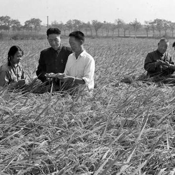
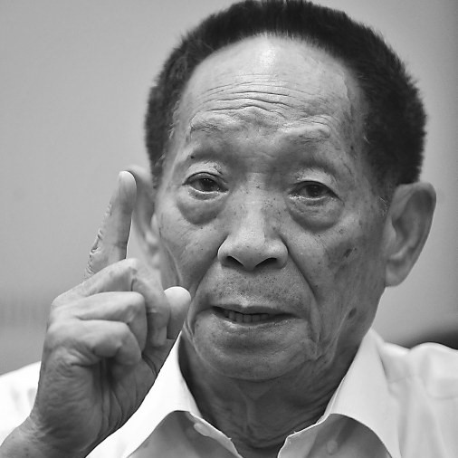

中华拓荒人——袁隆平
袁隆平（1930年9月7日-2021年5月22日），男，汉族，生于北京，
无党派人士，江西省九江市德安县人。中国杂交水稻育种专家，中国研究与发展杂交水稻的开创者，被誉为“杂交水稻之父。
重要事迹
- 1977年，袁隆平发表了《杂交水稻培育的实践和理论》与《杂交水稻制种与高产的关键技术》两篇重要论文。
- 2017年9月，“杂交水稻之父”袁隆平及其团队培育的超级杂交稻品种“湘两优900（超优千号）”又创亩产纪录，经第三方专家测产，该品种的水稻在试验田内亩产1149.02公斤
- 2020年3月，袁隆平院士选址、谋划和题名的“隆平国际现代农业公园”在广州市黄埔区启动建设，一期项目大吉沙岛水稻公园水稻种植工作启动。
- 2020年6月，袁隆平团队在青海柴达木盆地盐碱地里试种的高寒耐盐碱水稻（又称海水稻）长出了水稻。
主要成就
- 2016年11月19日，对华南双季稻年亩产三千斤绿色高效模式攻关项目进行测产验收。现场实割测得晚稻平均亩产705.68公斤。
- 2018年5月22日，位于三亚水稻国家公园的有机覆膜直播试验示范田进行测产验收，测得亩产1065.3公斤，创下海南省水稻单产历史最高纪录
- 2020年11月2日，在湖南省衡阳市衡南县清竹村进行的袁隆平领衔的杂交水稻双季测产达到了亩产1530.76公斤，其中早稻619.06公斤、第三代杂交水稻晚稻品种“叁优一号”911.7公斤，超过了1500公斤的预期目标。
获奖记录
- 2019-10-16 2019新京报大国匠心致敬礼团队
- 2018-09-08 未来科学大奖生命科学奖
- 2016-10-03 第一届吕志和奖—持续发展奖
- 2015 第十四届世界杰出华人奖
- 2014-01-10 国家科学技术进步奖、特等奖
- 2011 马哈蒂尔科学奖
- 2010-03-24 法国最高农业成就勋章
- 2008-03-30 中国著名科学家奖、2007影响世界华人终身成就奖
生平照片

